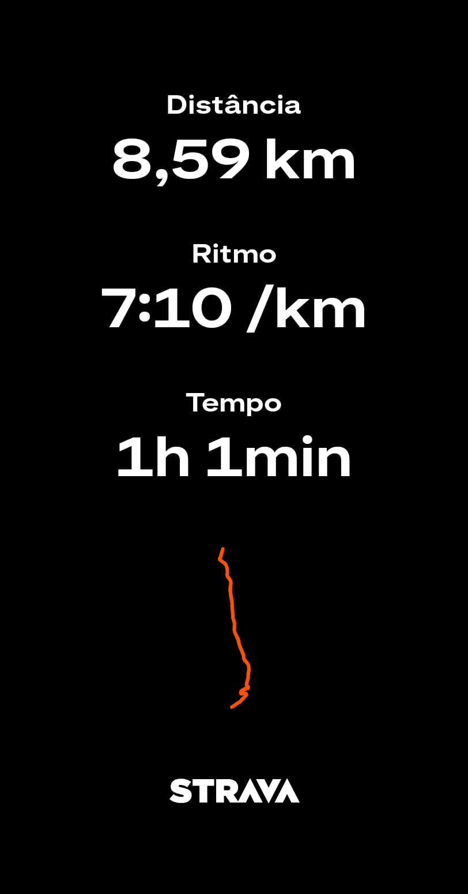

Alcides, 51 Anos: 8,5 km de Corrida de Aventura com Obstáculos com Pace de 7:10
Vídeo: Alcides em ação na corrida de aventura - 8,5 km com obstáculos
51 anos. 8,5 km. Calor de 31ºC, sede, solo arenoso, rampa de 12% e morro. Enquanto muita gente acha que depois dos 50 é hora de parar e só caminhar no shopping, o Alcides, nosso Velho Guerreiro e colaborador oficial do site, mostrou o oposto: completou a prova sorrindo, inteiro, com pace médio de 7min10s e sem caminhar nenhum trecho.
Essa não é história de atleta profissional. É história real de pai, trabalhador, que treina desde os 20 e nunca parou. E é por isso que vale mais.
1. Quem é o Alcides? O Velho Guerreiro Real
O Alcides não vive de corrida. Ele trabalha 10h por dia, tem família, contas para pagar e rotina puxada como a sua. A diferença é que manteve a disposição e disciplina porque entendeu cedo que cuidar da saúde é melhorar qualidade de vida, não vaidade.
Hoje ele é colaborador do site Velho Guerreiro e traz relatos reais de provas 40+ e 50+. Ele mesmo fala: "Não corro para ganhar de ninguém. Corro para não perder para mim mesmo. Se eu paro, minha cabeça para junto.". Essa é mentalidade que pregamos aqui: constância vence genética.
Ele começou a correr aos 23 anos, parou dos 35 aos 42 por lesão no joelho direito (menisco), voltou com fortalecimento correto e hoje, aos 51, está mais forte que aos 40. Prova que recomeçar depois dos 40 é possível com método certo.
2. Como um Homem de 51 Anos Corre 8,5 km com Obstáculos Sem Quebrar?
Não foi sorte, não foi talento. Foi estratégia de Velho Guerreiro que qualquer homem 40+ pode copiar.
- 1. Treino de força 3x na semana (seg, qua, sex): Foco em perna e core. Agachamento livre, afundo búlgaro, ponte de glúteo e prancha. Sem isso, você não enfrenta subida de 12% com lama. Músculo protege articulação.
- 2. Corrida leve 2x na semana (ter, qui): De 5 a 7 km em ritmo conversável (consegue falar frase). Nada de pace de 5min todo treino. Ele treinou 90% a 6min30s-7min para correr prova a 7min10s. Jovem erra aqui: treina sempre forte e quebra na prova.
- 3. Mobilidade de joelho e tornozelo todo dia 10 min: Mesmo protocolo do nosso artigo de dor no joelho. Cadeira isométrica 45º, elevação de perna esticada e mobilidade de tornozelo na parede. Foi o que protegeu joelho do Alcides nas descidas com solo arenoso.
- 4. Hidratação e eletrólitos: 2 dias antes já aumentou água + sal. Na prova levou 300ml com pitada de sal. Calor mata performance 40+ mais rápido que jovem.
| Semana do Alcides (51 anos) | Treino | Tempo |
|---|---|---|
| Segunda | Força perna + core em casa | 40 min |
| Terça | Corrida leve 6km pace 6:30 | 39 min |
| Quarta | Força superior + mobilidade | 35 min |
| Quinta | Corrida com 4x subida 100m | 35 min |
| Sexta | Força total + alongamento | 40 min |
| Sábado | Descanso ou caminhada leve | - |
| Domingo | Longão ou prova | - |
3. O Que Mais Pega na Corrida de Aventura Depois dos 40 e 50?
1. O calor engana e quebra
Você gasta 3x mais energia para resfriar corpo após 50. Se sair forte nos 2 primeiros km, quebra no 5º km e caminha. Alcides manteve-se inteligente: 2 primeiros km a 7min40s conservando, do 3º ao 6º manteve 7min10s, e só acelerou depois do 6º km para 6min50s quando já tinha passado pior parte da rampa. Estratégia negativa split que jovem não tem paciência de fazer.
2. A mente quer parar antes do corpo
Você vai querer parar no 4º km quando vê morro de lama. Cabeça de quem tem 51 anos é mais forte que de 20 se você treina ela. Regra dele que usa até hoje: nunca parar no obstáculo, só depois dele. Se parar no meio da subida, cérebro aprende que pode parar sempre. Se passa obstáculo e depois caminha 20 seg se precisar, cérebro aprende superação.
3. Obstáculo não é só físico
Rastejar, subir muro baixo, carregar tronco. Depois dos 50, isso exige mobilidade de quadril. Por isso ele faz ponte de glúteo todo dia. Sem glúteo forte, você compensa lombar e trava.
4. Pace de 7min10s é Lento? Mito do Instagram
Muita gente no Instagram julga pace. Na corrida de aventura, pace de 7min10s com 8 obstáculos e 187m de subida vale pace de 6min na rua plana. São subidas e descidas que exigem muito do corpo e mente, além de solo fofo que rouba energia.
Alcides correu com inteligência: correu nos estradões e administrou nos obstáculos, caminhando só 2 passos para posicionar pé, sem parar relógio. Isso é experiência de Velho Guerreiro. Jovem sai a 5min30s, morre no 5km e termina andando a 8min30s. Velho Guerreiro faz média 7:10 e chega inteiro e vibrando para contar história.
Para referência: na categoria 50-54 anos, média da prova foi 7min45s. Alcides ficou em 18º de 86 na categoria. Com 51 anos, trabalhando 10h por dia.

Conclusão: Seu Obstáculo Não Está na Pista, Está na Desculpa
O Alcides tem 51 anos, trabalha 10h por dia, tem família e ainda arrumou tempo para fazer 8,5 km de pura aventura debaixo de sol de 31ºC. O pace dele de 7min10s vale mais que muito pace de 4min30s de quem nunca sentiu dor no joelho e nunca precisou recomeçar do zero após lesão.
Se ele fez, você faz. Comece com 3 km leves 2x semana + fortalecimento de joelho 3x semana por 30 dias. Depois tente sua primeira aventura de 5km. Não precisa ser o mais rápido da prova, precisa ser mais rápido que sua desculpa de ontem.
Essa história é real, é nossa, é do Velho Guerreiro. Alcides é colaborador oficial do site e trará mais relatos de provas 40+ e 50+ por aqui. Quer mandar sua história? Fala com a gente na página de contato.
Força e disciplina.
— Velho Guerreiro e Alcides (Colaborador 51 anos)